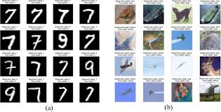

🎬 Multimodal Movie Genre Classification
Designed a multimodal deep learning system integrating DistilBERT text embeddings with ResNet-18 visual features. Led the full pipeline: data preprocessing, feature fusion, model training, evaluation using macro/micro F1 metrics, and deployment via a web interface. Addressed class imbalance with weighted loss functions, implemented dropout and normalization, and presented results with an interactive demo showing predictions on test data.
View Repository →

👁 Partial Face Recognition Under Occlusion
Engineered a hybrid classical CV pipeline robust to facial occlusion. Extracted HOG, SIFT, and LBP descriptors, applied PCA for dimensionality reduction, and trained SVM classifiers. Implemented cosine and Euclidean similarity metrics for robust matching under varying lighting and scale.
View Repository →

🧠 Brain Tumour Detection
Developed a CNN-based MRI classification pipeline. Applied medical image preprocessing, augmentation, and regularization. Evaluated using sensitivity, specificity, and ROC-AUC for clinically relevant performance. Optimized the workflow to handle large medical datasets efficiently.
View Repository →

🛒 Role-Based E-Commerce Management System
Led the development of a multi-role e-commerce management platform using Java OOP, JDBC, and MySQL.
I implemented Role-Based Access Control (RBAC) to manage admin, seller, and customer permissions.
Built normalized database schemas and optimized SQL queries for transactions, inventory, and user management.
Designed order lifecycle workflows, including cart, payment, and order tracking, simulating real-world e-commerce operations.
Ensured system robustness through unit testing, error handling, and modular backend design. Demonstrated leadership by coordinating the full-stack integration and delivering a seamless demo experience.
View Repository →

🔢 MNIST & CIFAR Image Classification Systems
I developed highly optimized convolutional neural network (CNN) pipelines to tackle two foundational image classification benchmarks: MNIST (handwritten digit recognition) and CIFAR‑10 (natural image classification).
For **MNIST**, I engineered a model architecture with multiple convolutional and pooling layers, added batch normalization and dropout for regularization, and tuned hyperparameters (learning rate scheduling, optimizer selection) to maximize validation accuracy. I also built automated scripts for data preprocessing, augmentation (rotations, shifts, scaling), and training curve visualization — enabling clear diagnosis of under‑ and over‑fitting patterns. The workflow incorporated confusion matrices and mistake analysis to iteratively improve performance.
🔗 View MNIST Repo →
For **CIFAR‑10**, I constructed a deeper CNN tailored for color image data with enhanced complexity, including data augmentation (horizontal flips, random crops, normalization), dropout layers to control overfitting, and learning rate schedulers to adapt optimization over epochs. I compared multiple architectures and tracked performance across accuracy, precision, recall, and F1‑score metrics. This project demonstrates robust model design and systematic evaluation on varied image datasets.
🔗 View CIFAR Repo →